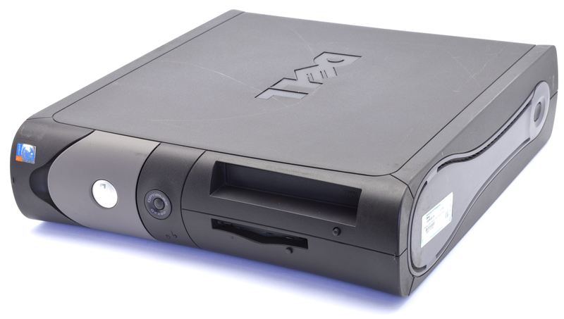

Sources
- Artman, J. (2017, April 13). Types of Motherboard Connectors. Retrieved June 8, 2018, from https://itstillworks.com/types-motherboard- connectors-7272790.html
- Computer Hope. (2018, April 01). What is a Hard Drive? Retrieved June 6, 2018, from https://www.computerhope.com/jargon/h/harddriv.htm
- Computer Hope. (2018, May 21). What is a Heat Sink? Retrieved June 6,2018,from https://www.computerhope.com/jargon/h/heatsink.htm
- Computer Hope. (2018, May 21). What is CPU (Central Processing Unit)? Retrieved June 6, 2018, from https://www.computerhope.com/jargon/c/cpu.htm
- Computer Hope. (2018, May 21). What is RAM (Random Access Memory)? Retrieved June 6, 2018, from https://www.computerhope.com/jargon/r/ram.htm
- Fisher, T. (2018, March 27). All About the Power Supply Unit (PSU). Retrieved June 7, 2018, from https://www.lifewire.com/power-supply-unit- 2618158
- Fisher, T. (2018, March 8). What Is an Optical Drive and Do You Need One in Your Computer? Retrieved June 8, 2018, from https://www.lifewire.com/what-is-an-optical- disc-drive-2618157